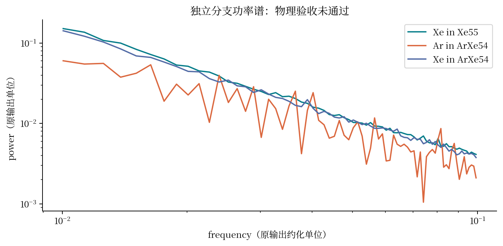
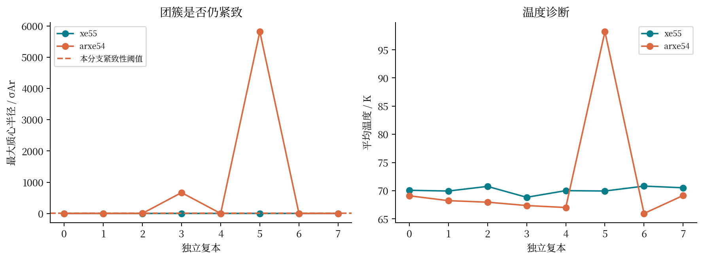
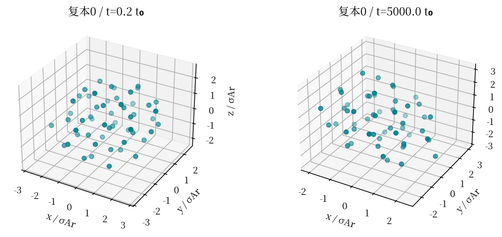
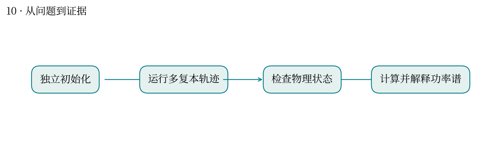
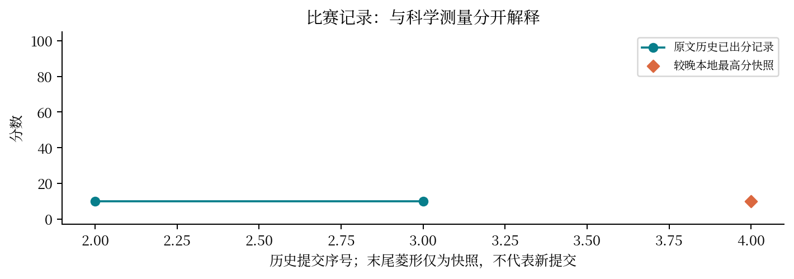

← 返回交互图解10 · 稀有气体功率谱
这道题有什么实际用处？
现实中想解决什么：一条振动频谱能否告诉我们，团簇结构和动力学模型是否可信？
从计算到应用：原子速度随时间变化 → 功率谱 → 与振动测量或结构模型比较。
这次实际做到哪一步：本题已提取谱与物理诊断，但该分支团簇紧致性验收失败，谱形不能单独证明正确。
还缺什么：稀有气体团簇是模型体系，不直接预测产品性能。需先通过物理验收，再谈可比实验及用途。
一团原子的能量噪声里，藏着多长时间的记忆？
最高分快照：10.0 · 2026-10-12T01:11:24+08:00
问题与背景
功率谱把随时间变化的信号拆成不同频率的成分。低频描述慢变化，但低频趋势也可能来自漂移、蒸发或样本太短。
实际做了什么
读取独立求解目录的 Xe55 与 ArXe54 八复本轨迹、三条谱线和物理诊断；从同一复本抽帧，制作可拖动观看的原子动画。
结果与解释
science_status.json 明确 physical_acceptance=false。谱斜率关系满足并不挽救团簇紧致性失败；结果图同时给出最大半径及温度诊断。
关键坑点
不能拼接不同复本的时间形成一条连续物理轨迹；不能挑掉失败种子；对数图近似直线不等于已证明普适幂律。
与你的研究如何联系
像组学质控：下游聚类或拟合很漂亮，也不能抵消上游样本失效。应先检查系统是否仍处于声称研究的状态。
局限与题目/评分审视
本地成绩为 10 分，但该独立分支物理验收失败；不能据分数宣称科学问题已解决。本报告专门保留失败结果。
真实轨迹回放
播放速度用于展示，物理时间以画面标注为准；没有补造中间帧。
打开可旋转的三维回放 · 下载 GIF

真实计算但物理验收失败｜保持输出的 frequency/power 数值与频率约定，未自行改称 Hz；不据谱线斜率宣称团簇物理复现成功。下载矢量图
八复本诊断｜阈值来自该分支的 structure_manifest；保留失败复本，不把只通过的种子当成全体结果。下载矢量图
真实原子坐标｜独立分支 Xe55 复本0抽帧，3.405 Å 为长度单位；整体项目验收失败，单帧紧致不能替代完整诊断。下载矢量图
方法流程示意｜依据过程记录整理，不是测量数据或运行轨迹。下载矢量图
历史分数｜只连原文“已出分”记录；失败、rejected、排队不按 0 分绘制。菱形是较晚本地最高分快照，无法据此确定最终计分提交。下载矢量图提交记录（原文快照）
| attempt | 提交时间 | 分数 | 状态 |
|---|
| 52352 | 10-11 02:03:20 | — | rejected |
| 52631 | 10-11 03:18:28 | 10.0 | 已出分 |
| 52902 | 10-11 05:11:32 | 10.0 | 已出分 |
来源与复现
源文件 SHA256 见 证据清单；用 scripts/build.py 重建图表。
- 逐题科学报告/feishu-original.json
- .scores_baseline.json
- 赛题/独立求解/rare-gas-clean-source/outputs/step_01_power_spectrum_xe55.csv
- 赛题/独立求解/rare-gas-clean-source/outputs/step_02_power_spectrum_ar_arxexe.csv
- 赛题/独立求解/rare-gas-clean-source/outputs/step_03_power_spectrum_xe_arxexe.csv
- 赛题/独立求解/rare-gas-clean-source/outputs/science_status.json
- 赛题/独立求解/rare-gas-clean-source/outputs/analysis_diagnostics.json
- 赛题/独立求解/rare-gas-clean-source/outputs/structure_manifest.json
- 赛题/独立求解/rare-gas-clean-source/outputs/trajectory_xe55.npz